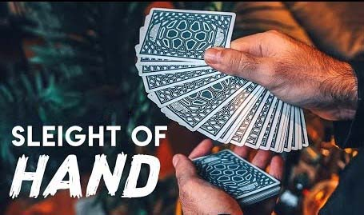
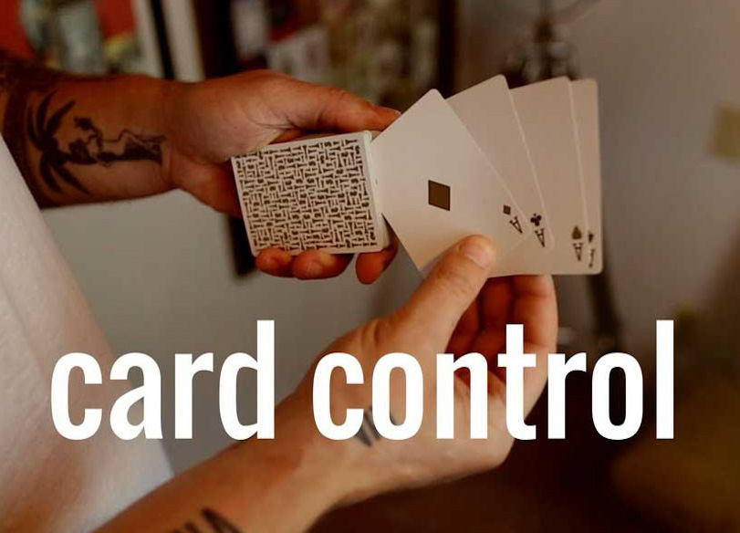

Täuschung

Ich zaubere seit 2018, also zur Zeit der Entwicklung dieser Webseite, seit fast 6 Jahren.
Ich habe mich im Bereich Kartenzaubern spezialisiert.
Zaubern ist, wie Feuer, auch schon sehr lange eine Faszination für mich. Der unmögliche
Effekt beim Zaubern fasziniert mich extrem. Ich liebe auch das Knifflige am Zaubern,
also die Techniken, die viel Fingerfertigkeit benötigen und kompliziert sind. Auch
liebe ich das Gefühl der Karten und die Kontrolle über ein Deck zu haben. Es macht
immer wieder Spaß die Reaktionen meines Publikums zu sehen.
Kartentricks sind meistens mit einer Abfolge von Grundtechniken aufgebaut, die in möglichst spektakulärer und überzeugender Weise präsentiert werden. Generell gibt es 3 Grundtechniken:
- Card-Controls (Karte kontrollieren)
- Card-Forces (Karte forcieren/aufzwingen)
- False-Shuffle (gefälschtes Mischen)

Bei all diesen Grundtechniken gibt es zahllose verschiedene Techniken, die den gewünschten
Effekt erzielen können. Es ist sinnvoll, bei all diesen Gebieten eine Variation von Techniken
zu beherrschen, um einen möglichst überzeugenden Effekt zu haben. Denn einige Techniken
eignen sich besser, wenn mehrere Leute um einen sind; einige sind besser für nur eine Person
zu zeigen, und einige eignen sich am besten für die Kamera. Deswegen ist es sinnvoll, viele
Techniken innerhalb der verschiedenen Grundtechniken zu beherrschen.
Über all meine Jahre Zaubertricks habe ich viele verschiedene Techniken gelernt. Ich habe leider
fast all meine Tricks vergessen, aber kann noch viele Techniken, und dadurch kann ich auch selbst
Tricks entwickeln.
Meine Fähigkeiten im Bereich Zaubern sind also technisch ziemlich gut,
aber präsentieren kann ich nicht ganz so gut.